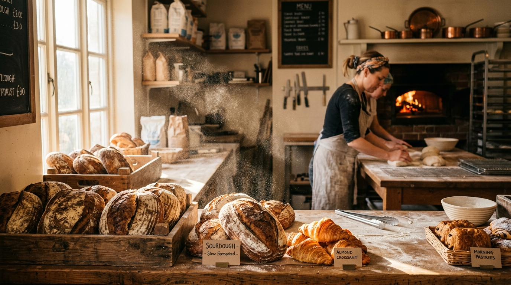
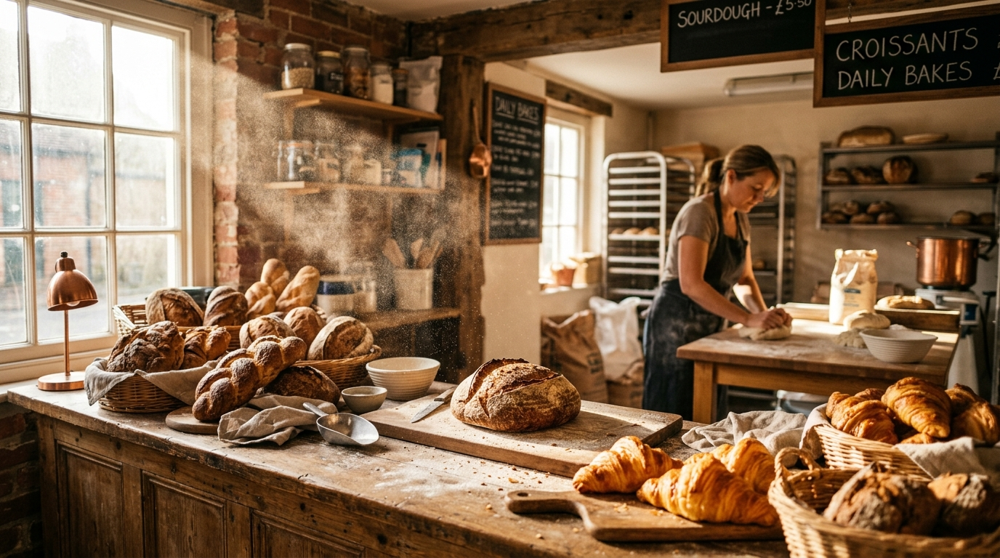
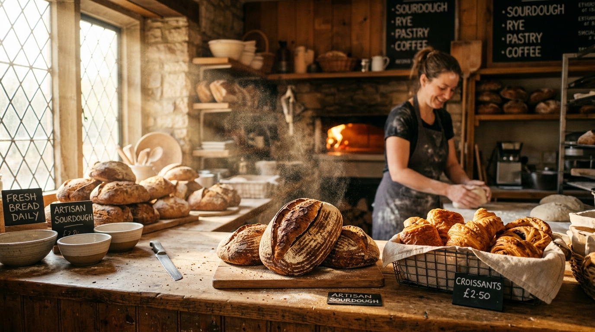

Slow-fermented sourdough and morning pastries, baked before dawn in a wood-fired oven. Sold until they run out, which is usually by noon.
See today's bakesWe do one thing, properly: real bread, made slowly, by hand, the way it was before shortcuts.
Flour, water, salt, fire, and three days of patience. No mixes, no improvers, nothing you would not find in your own kitchen.

Everything is mixed the night before and baked at first light. Come early for the full table, or order ahead so we set yours aside.

Our starter is older than the shop. We ferment slowly for a deeper flavour and an easier crumb, then bake straight on the stone of a wood-fired oven for that dark, blistered crust. No improvers, no rushing.